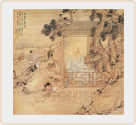

| 绿茶的历史 |


两晋南北朝时期，为方便储藏和运输,出现了将散装茶叶跟米膏一起制成茶饼的晒青茶，这种方法一直沿用到初唐时期。而到唐朝及以后相当长的时间里，蒸青饼茶取代了西青饼茶成为当时茶的主要形式。蒸青茶克服了晒青茶加工后仍有浓浓的青草味这一缺点,使茶叶的味道更加鲜爽。
到了宋朝，由于蒸青饼茶在压制过程中会损失一部分茶香，而且制茶过程费时费力，于是就出现了蒸青散茶，蒸青散茶是将茶蒸后直接烘干，这样就很好地保持了茶叶的香味。自宋朝至元朝，蒸青饼茶和蒸青散茶一直并存，直到明朝初年，这种局面才被打破。
1391年，洪武皇帝朱元璋下诏:“罢造龙团,惟采茶芽以进。”于是，不再有蒸青饼茶，而独存下来的蒸青散茶在明朝前期大行其道。 蒸青散茶虽然比蒸青饼茶留香好，但还是不够浓郁，于是利用干热发挥茶叶芳香的炒青技术就应运而生了。
| 绿茶的传说 |
有一次，神农氏在尝百草时不慎误吃了多种有毒的植物，各种毒性一起发作，他腹如刀绞，晕倒在一棵小树下。醒来后，觉得口干舌燥，心如火烧，为民求药的使命感使他产生了强烈的求生愿望，他挣扎着坐起来，去采摘枝头的嫩芽嫩叶止渴充饥。没想到吃了几口后，腹中的疼痛减轻了。再吃一些，不但痛苦消失了，而且舌下生 津，满口回甘，神清气爽。“ 宝树，真是宝树啊]”神农氏高兴地跳了起来，并把这种神奇的植物称为“茶”。